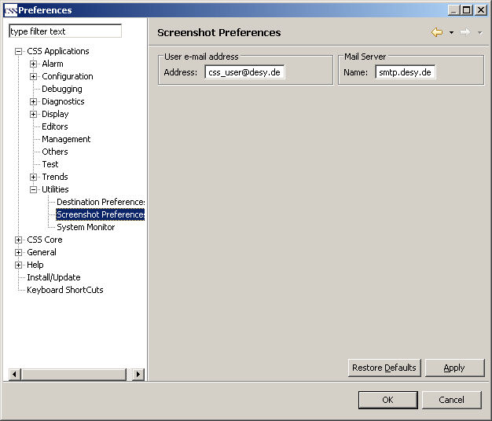

CSS Screenshot
Preferences
The settings in the Preference Pages for the Screenshot plugin just contain two entries:
- Name of the mail sender
- URL of the mail server
The Preference Page is available under CSS-Applications->Utilities->Screenshot Preferences
